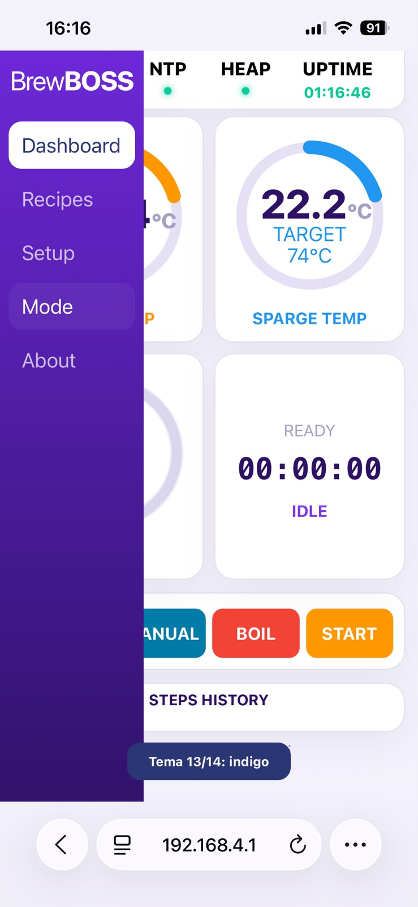
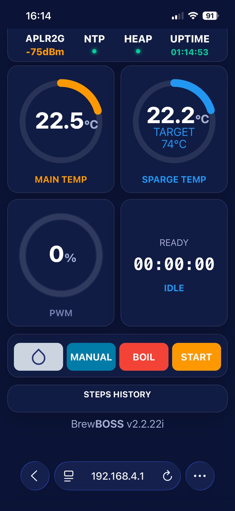
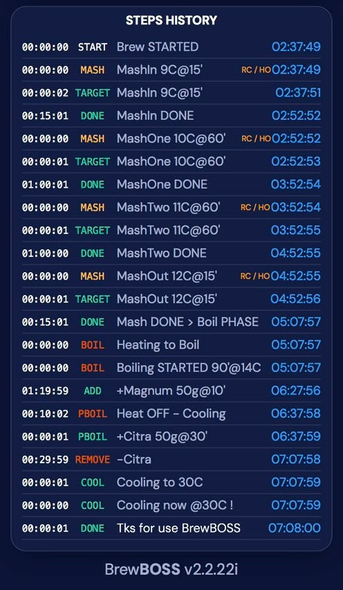
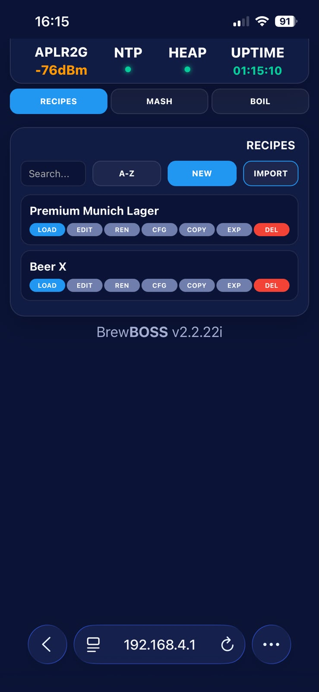
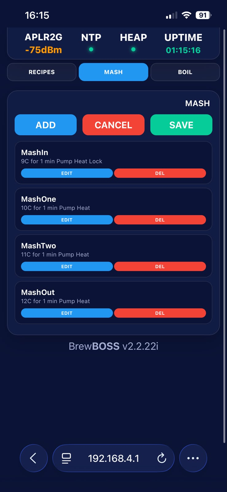
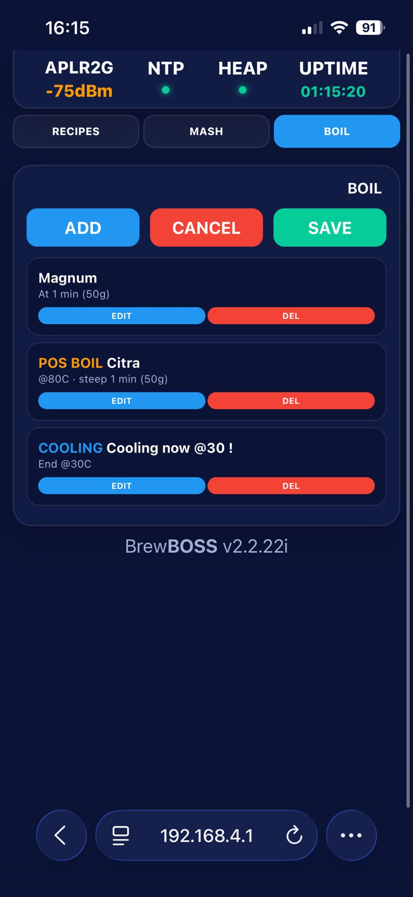
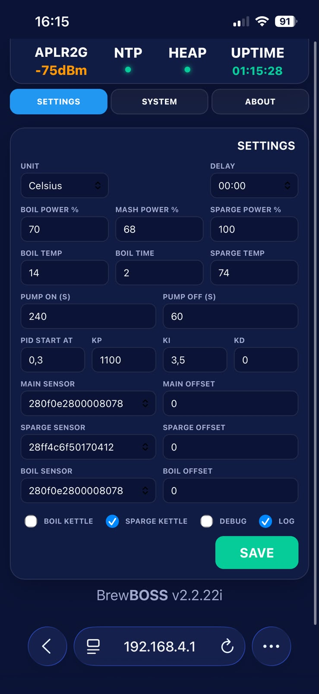
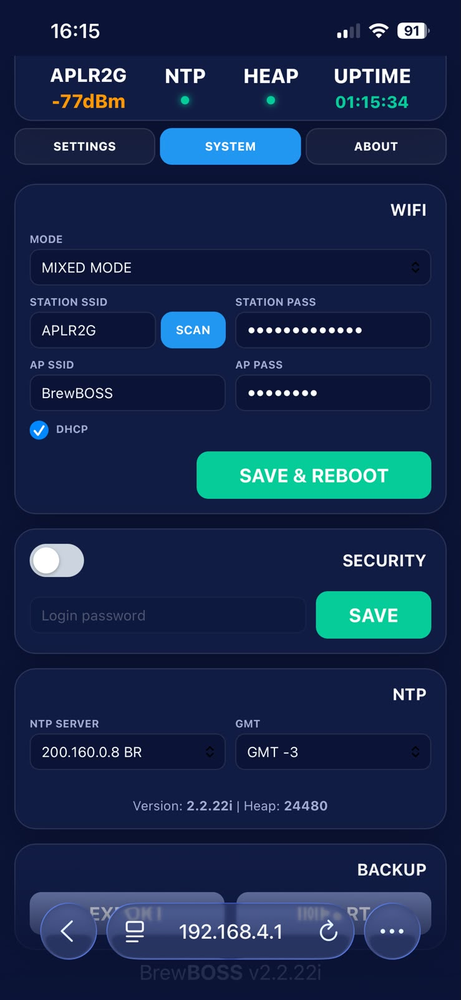
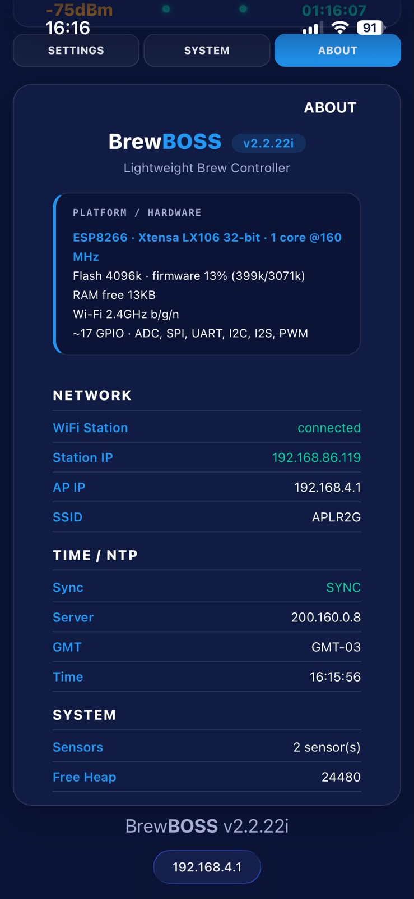
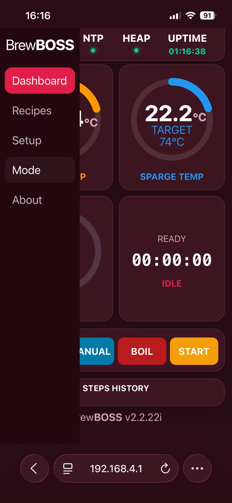

BrewBOSS automates the mash, boil and post-boil stages of a brew day. You can run it from any phone or computer browser, or stand-alone with the 20×4 LCD and 4 buttons — online or offline.
1. Overview
BrewBOSS is a controller for electric brewing equipment. It manages the heaters, the pump and the timers of a full brew day, and reports temperatures and progress in real time.
You can operate it in three ways, which work together:
- Web interface — a single page served by the device; control everything from a browser.
- LCD & 4 buttons — full stand-alone operation, even with no network.
- REST API — optional, for integrations and scripts.
What it can do:
- Run programmable mash steps, an automatic boil with timed hop additions, and a post-boil stage with temperature-triggered additions and final cooling.
- Run fully manual (direct power) or by pre-programmed recipes.
- Manage recipes (create, edit, save, activate, delete) and import recipes — compatible with tools such as BeerSmith / Brewfather, and your own recipes can be exported and imported.
- Record logs: a temperature CSV (one sample per minute, with events) ready for detailed mash graphs, so you can fine-tune a recipe for your specific equipment.
- Recover automatically after a power loss and continue the brew where it stopped.
- Protect the batch with a safety system (over-temperature cut-off and sensor-loss cut-off).
- Work online or offline; show status on a 20×4 LCD.
2. Prerequisites & installation
To operate BrewBOSS you need:
- A supported controller board (Wemos/ESP8266, ESP32 or ESP32-C3) with the BrewBOSS firmware installed.
- The brewing hardware wired to it: heater(s) via SSR, a pump, and one or more DS18B20 temperature sensors. An optional 20×4 I²C LCD and 4 buttons enable stand-alone use.
- A phone, tablet or computer with a web browser.
- Optionally, your home Wi-Fi network (otherwise the device runs its own access point).
Installing the firmware (flashing)
If the board is not flashed yet, write the firmware and filesystem with esptool:
- Download the two
.binfiles for your board from the binaries folder: the firmware (no_fssuffix — flash it first) and the filesystem (_fssuffix — flash it second). - Flash them at the correct offsets — for the Wemos/ESP8266, for example (replace
<version>with the downloaded version):
esptool.py --chip esp8266 --port COMx write_flash 0x0 BrewBOSS_<version>_esp12e.bin
esptool.py --chip esp8266 --port COMx write_flash 0x200000 BrewBOSS_<version>_esp12e_fs.bin0x0.3. Accessing the system
- Power on the controller. On boot it starts the filesystem, Wi‑Fi, sensors, LCD and keypad.
- Connect to its access point. By default the device creates a Wi‑Fi network named
BrewBOSS(passwordbrewboss), with IP192.168.4.1. - Join that network with your phone/PC and open
http://192.168.4.1in the browser. - A login window appears (see below).
Login & access levels
Access protection is optional and based on a single password. By default the password is brewboss.
- Enter the correct password → LOGIN: full access. The session lasts until the device restarts.
- IGNORE: read-only access — you can see everything but cannot make changes.
- Wrong password: it asks again, up to 10 attempts, then falls back to read-only.
You change or remove the password in Setup → System → Security. An empty password disables the login entirely.
brewboss.Switching to your Wi‑Fi
To put the controller on your home network, open Setup → System → WiFi, choose the mode and enter your SSID/password, then Save & Reboot.
4. Navigating the interface
The interface has a side menu on the left and a status bar at the top.
Side menu — the main destinations:
- Dashboard — the main screen with live temperatures, the timer and the control buttons.
- Recipes — your recipe library and the mash/boil step editors.
- Setup — Settings, System (network, security, time, backup) and About.
- Mode — switches the color theme of the interface.
- About — version and hardware information.
Tap the status bar to collapse/expand the menu (useful on phones).
Status bar — the Wi‑Fi indicator, the NTP (clock) dot, the HEAP (free memory) dot, and the device UPTIME.

5. Step‑by‑step operation
This is the typical flow of a brew day with a recipe:
- Prepare. Fill the kettle, place the sensors, and connect to the interface.
- Choose a recipe. Open Recipes, pick one and Activate it.
- Check the settings. In Setup → Settings, confirm temperature unit, boil temperature/time and sensors.
- Start the mash. On the Dashboard press Start. The system heats to the first step's target, then runs its timer.
- Follow along. Watch the gauges and the Steps history. When a locked step beeps, release it.
- Boil. After the last mash step the system moves to the boil automatically. It heats to boiling, runs the timer and fires each hop addition on time.
- Post‑boil & cooling. With heating off, it monitors cooling and triggers temperature‑based additions, then the final cooling step.
- Finish. The buzzer signals the end and the screen shows the total brew time.
6. The screens, one by one
Each section below tells you the screen name, what it shows, what it is for, and how to act on it.
6.1 — Dashboard (Main)
What it shows. The home screen with three round gauges and a timer card: main temperature, sparge temperature, power (PWM), and the brew timer with the current step name.
What it is for. This is where you start, monitor and stop a brew, and read the live state.
How to act. Use the control buttons below the gauges. During manual mode you can tap a gauge to set the target temperature or power.

6.2 — Step & steps history
What it shows. The current step/timer and a running list of every milestone of the process.
What it is for. To follow exactly where the brew is and what just happened.
How to act. Read it to keep track. Event types are color-coded.

6.3 — Recipes
What it shows. Your recipe library, with a search box and sorting, plus an Import button.
What it is for. To create, store and reuse recipes.
How to act. Activate a recipe to load it for brewing. Import recipes you saved elsewhere; save/edit your own; delete the ones you no longer need.

6.4 — Mash steps editor
What it shows. The list of mash steps with name, target temperature, duration and per‑step flags.
What it is for. To define the mash profile.
How to act. Add, edit and reorder steps; set temperature and time; and set the flags: Recirculate (run pump), Heater on, Full power, Step-lock (pause for manual action).

6.5 — Boil steps & additions editor
What it shows. The boil program and the additions.
What it is for. To schedule hop additions during and after the boil.
How to act. Add additions and choose how each one is triggered: timed addition (during the boil), post‑boil addition (by temperature), or final cooling.

6.6 — Settings
What it shows. The brew parameters that apply to every batch: unit, delay, power percentages, boil temperature/time, sparge, PID band, pump timing, sensor assignments and checkboxes.
What it is for. To match the controller to your equipment.
How to act. Set the values and press Save. Use the sensor offsets to calibrate readings against a reference thermometer.

6.7 — System (network, security, time, backup)
What it shows. The device configuration panels.
What it is for. Network, login, clock and backup.
How to act. Set Wi‑Fi mode and credentials, Security (login on/off and password), NTP server and GMT offset, and Backup (export/import your config).

6.8 — About
What it shows. The firmware version, hardware, network status, time/NTP and system info.
What it is for. A health check and the information to include when asking for help.
How to act. Read‑only — use it to verify everything is working.

6.9 — Color themes (Mode)
What it shows. The interface in its different color schemes.
What it is for. Comfort and readability — for example a dark theme for a dim brew room.
How to act. Tap Mode in the side menu to cycle through the available color schemes.

7. Buttons, fields, messages & indicators
Control buttons (Dashboard)
- Start — begins the mash.
- Pause / Resume — pauses and resumes.
- Stop — stops everything.
- Skip — skips the current mash step.
- Boil — starts the boil directly.
- Pump — turns the pump on/off.
- Prime — runs an automatic priming cycle.
Status indicators
- Wi‑Fi: signal strength in dBm when joined to a network, or AP (green) plus the access‑point name when the device is running as an access point.
- NTP dot: green when the clock is synchronized.
- HEAP dot: free memory health.
- UPTIME: how long the device has been running.
Messages & events
The Steps history and the LCD show events such as Brew STARTED, target reached, step done, hop addition, and completion. A SAFETY event with an alarm means a protection was triggered.
Sounds (buzzer)
| When | You hear |
|---|---|
| Target temperature reached | Two long beeps |
| Mash step advances | Short–short–long |
| Boil starts / hop addition | Two short + two long |
| Step locked (needs your action) | Two beeps every 15 s |
| Brew complete | Four long beeps |
| Safety triggered | Alarm pattern |
8. Operation modes
- Mash — runs your mash steps; for each step it heats to the target, runs the timer, then advances. After the last step it moves to the boil automatically.
- Boil — heats to the boil temperature, runs the timer and fires the timed additions. You can start it on its own.
- Post‑boil — heating is off; it monitors cooling and triggers temperature‑based additions, then the final cooling step.
- Manual — you set the heater power directly (open loop). The target is informational only. Not saved for recovery.
- Delay (scheduled start) — start the mash or boil with a delay; the device counts down and begins on its own.
Pump & prime
- Pump — switch it on/off manually; during a recirculation step it is controlled automatically.
- Prime — an automatic cycle (5 × 3 s on / 2 s off) to fill the plumbing before you start.
9. Standalone use — LCD & physical buttons
You can run a whole brew without the web interface.
The 20×4 display
[w] BrewBOSS 00:14:32 <- Wi-Fi icon + title + step timer [H] 65.20>66 [W] 68% [P] <- Main: current>target, power, PWM, pump [S] 74.00>74 100% M <- Sparge: current>target, PWM, B/M/L flag Add Citra 30g@15' <- last event message (or IP / AP)
- Line 1 — Wi‑Fi icon + "BrewBOSS" with the step timer while brewing; otherwise the version.
- Line 2 — main temperature (current>target), unit, heater power, PWM% and a pump icon when on.
- Line 3 — sparge temperature and its PWM%; a flag: B (boil paused), M (mash paused) or L (step locked).
- Line 4 — the last event message; when idle, it shows
IP: <address>orAP: 192.168.4.1.
After a brew completes, the screen shows a thank-you for 15 s and then the total brew time until you press any button.
The 4 buttons
The four membrane-keypad buttons are numbered 1–4. Each one reacts to three press lengths: short, long (~2 s) and very long (~3 s). A 1.5 s lock after starting a mode avoids an accidental stop.
| Press | 1 | 2 | 3 | 4 |
|---|---|---|---|---|
| Short | Pump on/off | Power −10% | Power +10% | Pause / Resume |
| Long (~2 s) | Prime | Start manual / skip step / unlock | Start boil | Start mash |
| Very long (~3 s) | — | Stop | Stop | Stop |
- The ±10% power change affects the active heater for the current mode.
- In the mash, a long press on button 2 skips the current step; if the step is locked, the same long press unlocks and advances it.
- On the "total time" screen after completion, any button returns to the home screen.
10. Power‑loss recovery
If power is lost during a brew, on restart the device detects the saved state, enters PAUSE and shows "RECOVERED! RESUME?" on the LCD.
- Press button 4 (short) to resume from where it stopped.
- If the clock was synchronized, the remaining time is adjusted for the time the device was off.
11. Main usage flow (quick reference)
- Power on → connect to
BrewBOSS/ open192.168.4.1→ log in. - Recipes → Activate your recipe.
- Settings → confirm unit, temperatures and sensors.
- Dashboard → Prime (optional) → Start.
- Mash runs and advances → moves to Boil → additions fire on time.
- Post‑boil / cooling → Complete (total time shown).
12. Best practices
- Calibrate sensor offsets against a trusted thermometer before your first brew.
- Run Prime and confirm flow before starting the mash.
- Keep the device on a trusted Wi‑Fi network — the connection carries the password in clear text on the local network.
- Save your brews as recipes and use the temperature log/CSV to fine‑tune them for your equipment.
- Make a Backup (Export) after you finish configuring the device.
- Keep the area near the heaters clear; never leave an active brew fully unattended.
13. Troubleshooting
| Symptom | Likely cause & what to do |
|---|---|
Cannot open 192.168.4.1 | Make sure you are joined to the BrewBOSS network. Type http://192.168.4.1 (with http://). On a phone, dismiss any "no internet" prompt. |
| Access point is unstable | In MIXED mode while the device is trying to reach an unreachable Wi‑Fi, the AP can flicker for up to 60 s, then falls back to AP‑only and becomes stable. Or use AP‑only mode. |
A temperature shows --- | That sensor is not detected or is disconnected. Check the wiring and re‑assign the sensor in Settings. |
| Heaters won't turn on / "SAFETY" event | Over‑temperature or sensor loss in an automatic mode. Let it cool / fix the sensor; heating resumes when safe. |
| Cannot make changes (read‑only) | You are in read‑only mode. Tap the "Read‑only — tap to login" badge and enter the password. |
| Forgot the password | Re‑flash the filesystem to reset the password to brewboss. |
| Wrong time on logs | The clock is not synced. Set an NTP server and the GMT offset in System. |
| After a power cut it is paused | That is the recovery feature. Press button 4 (short) (or use the interface) to resume. |
14. Firmware & installation
Firmware (LittleFS shipped separately) for the 3 supported controllers. Filesystem images are in LittleFS format.
Files and offsets
Each release in the binaries folder ships two files per controller: BrewBOSS_<version>_<board>.bin is the firmware (flash it first) and BrewBOSS_<version>_<board>_fs.bin is the filesystem (LittleFS — flash it second). The file ending in _fs is always the filesystem; the one without the suffix is the firmware. <board> is esp12e (Wemos D1 Mini / ESP8266), esp32 (ESP32 WROOM-32) or esp32c3 (ESP32-C3 Super Mini).
| Controller | File | Type | Offset | Size |
|---|---|---|---|---|
| Wemos ESP8266 (ESP12E) | BrewBOSS_<version>_esp12e.bin | Firmware | 0x00000000 | ~440 KB |
BrewBOSS_<version>_esp12e_fs.bin | LittleFS | 0x00200000 | ~2,024 KB | |
| ESP32 esp32dev | BrewBOSS_<version>_esp32.bin | Firmware | 0x00010000 | ~1,010 KB |
BrewBOSS_<version>_esp32_fs.bin | LittleFS | 0x00290000 | ~1,408 KB | |
| ESP32-C3 | BrewBOSS_<version>_esp32c3.bin | Firmware | 0x00010000 | ~1,020 KB |
BrewBOSS_<version>_esp32c3_fs.bin | LittleFS | 0x00290000 | ~1,408 KB |
OTA Firmware & Filesystem Updates
BrewBOSS supports Over-the-Air (OTA) updates directly via the web interface. This eliminates the need for USB cables and esptool for day-to-day updates. Upload the firmware file first (no _fs suffix), then the filesystem file (_fs suffix) second.
- How it works: Access Setup → System → Firmware Update in the web interface. Upload the new firmware and filesystem binary files. The device handles the internal writing to flash and reboots.
- Advantages:
- Convenience: No need to open the controller case or deal with USB drivers/ports.
- Safety: The bootloader includes automatic fallbacks to ensure the device remains functional even if an update is interrupted.
- Efficiency: Seamless transition between firmware versions and filesystem structures without manual offset calculation.
Prerequisites
- Install esptool:
pip install esptool - Connect the controller via USB and find its serial port (e.g.
COM5on Windows,/dev/ttyUSB0on Linux). - Run the commands from the folder where the
.binfiles are. - Replace
COMxwith the correct port. Add--baud 460800for faster flashing.
Flashing (update)
For an already-provisioned controller, flash the firmware first, then the filesystem (_fs) second — two separate steps (more reliable). Replace <version> with the downloaded version:
Wemos / ESP8266 — firmware
esptool.py --chip esp8266 --port COMx --baud 460800 write_flash 0x0 BrewBOSS_<version>_esp12e.binWemos / ESP8266 — filesystem
esptool.py --chip esp8266 --port COMx --baud 460800 write_flash 0x200000 BrewBOSS_<version>_esp12e_fs.binESP32 (esp32dev) — firmware
esptool.py --chip esp32 --port COMx --baud 460800 write_flash 0x10000 BrewBOSS_<version>_esp32.binESP32 (esp32dev) — filesystem
esptool.py --chip esp32 --port COMx --baud 460800 write_flash 0x290000 BrewBOSS_<version>_esp32_fs.binESP32-C3 — firmware
esptool.py --chip esp32c3 --port COMx --baud 460800 write_flash 0x10000 BrewBOSS_<version>_esp32c3.binESP32-C3 — filesystem
esptool.py --chip esp32c3 --port COMx --baud 460800 write_flash 0x290000 BrewBOSS_<version>_esp32c3_fs.bin0x0. The 2 files are enough.Blank chip (ESP32 / ESP32-C3)
On a new/erased chip you must also flash the bootloader, partition table and boot_app0 (found in .pio/build/<env>/:bootloader.bin, partitions.bin, boot_app0.bin).
ESP32 — bootloader at 0x1000
esptool.py --chip esp32 --port COMx --baud 460800 write_flash 0x1000 bootloader.bin 0x8000 partitions.bin 0xe000 boot_app0.bin 0x10000 BrewBOSS_<version>_esp32.bin 0x290000 BrewBOSS_<version>_esp32_fs.binESP32-C3 — bootloader at 0x0
esptool.py --chip esp32c3 --port COMx --baud 460800 write_flash 0x0 bootloader.bin 0x8000 partitions.bin 0xe000 boot_app0.bin 0x10000 BrewBOSS_<version>_esp32c3.bin 0x290000 BrewBOSS_<version>_esp32c3_fs.binesptool.py --chip <esp32|esp32c3|esp8266> --port COMx erase_flash. This also wipes the WiFi/recipes config stored in LittleFS.Notes
- Offsets are valid for the current partition table (4 MB flash). If the table changes, the offsets change.
- Images are LittleFS (not SPIFFS) — the firmware mounts the filesystem as LittleFS.
- After flashing, the controller starts the web server; access it via the network IP or the AP.
- ESP32-C3 with native USB: the port appears as an Espressif serial device (VID
303A); reset/boot for flashing is automatic.
15. Final notes
- BrewBOSS controls real heaters and hot liquids. Always follow safe electrical and brewing practices.
- The interface is served locally by the device and works offline; read access is open, and write access can be protected with the login.
- License: personal / non‑commercial use only.
License & Terms of Use
BrewBOSS License Agreement — Version 1.0
Copyright © 2026 LR
1. Grant of Use. This software, named BrewBOSS, is made available free of charge strictly for personal, private, and non‑commercial use only. Subject to the terms, you are permitted to: download and use for personal use; inspect source code; modify for personal use only; make private copies for backup.
2. Prohibited Uses. Forbidden without prior written permission: selling, reselling or commercializing; using in any commercial, industrial, corporate or revenue‑generating activity; embedding into products for sale; distributing for commercial purposes; using in production or industrial environments; removing this license notice. Any use outside personal, non‑commercial use is prohibited.
3. No Warranty. PROVIDED "AS IS", WITHOUT WARRANTY OF ANY KIND, EXPRESS OR IMPLIED. The copyright holder and contributors make no warranties of merchantability, fitness, non‑infringement, accuracy, reliability, compatibility, continuous operation, or that the software is error‑free or safe.
4. Safety and Operational Risk. The user acknowledges that the software may contain defects, may stop working, may behave unpredictably, may interact with hardware unsafely, and is not certified for safety or critical operations. The user assumes all risks.
5. Limitation of Liability. IN NO EVENT SHALL THE COPYRIGHT HOLDER, AUTHORS OR CONTRIBUTORS BE LIABLE FOR ANY CLAIM, LOSS, DAMAGE, COST OR LIABILITY OF ANY KIND, WHETHER DIRECT, INDIRECT, INCIDENTAL, SPECIAL, CONSEQUENTIAL OR OTHERWISE. This includes loss of data, file corruption, equipment malfunction, hardware damage, electrical damage, overheating, fire, personal injury, loss of profits, business interruption, production loss, and any other damages.
6. No Support. No obligation to provide technical support, updates, bug fixes, maintenance, security patches, compatibility changes or documentation updates. Any voluntary support does not create a continuing obligation.
7. Termination. Any violation automatically terminates your right to use the software. Upon termination, stop using and delete all copies.
8. Acceptance. By downloading, installing, copying, modifying, accessing or using BrewBOSS, you agree to be bound by this license. If you do not agree, do not use the software.